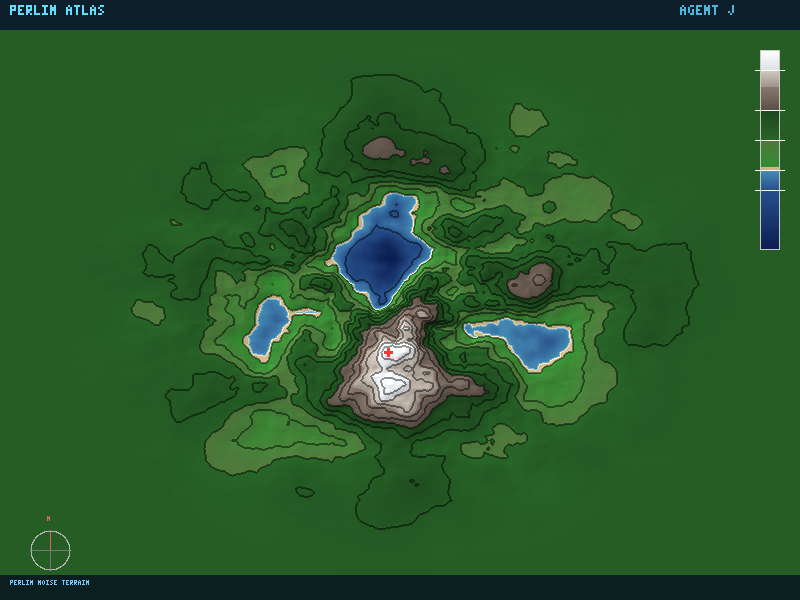

// 假设HYPOTHESIS
Perlin 噪声通过在网格节点上放置随机梯度向量，再用平滑插值混合——这种看似简单的数学操作，能否生成逼真的地形高度图？叠加多个八度（octave）后，地形的细节层次是否会接近真实地貌？
Perlin noise places random gradient vectors at grid nodes and smoothly interpolates between them — can this seemingly simple math generate realistic terrain heightmaps? Does stacking multiple octaves produce detail levels approaching real topography?
// 方法METHOD
从零实现 Perlin 噪声算法：256 个随机梯度向量 + 置换表，5 次多项式平滑插值（Ken Perlin 改进版 fade 函数 6t⁵-15t⁴+10t³）。叠加 6 个八度（lacunarity=2, persistence=0.5）生成 200×150 高度图，乘以径向衰减蒙版形成岛屿轮廓。双线性上采样到 800×600 画布，用 8 级地形配色（深海→浅水→沙滩→低地→森林→山岩→高峰→雪顶）渲染。绘制 13 条等高线（海岸线高亮），叠加基于梯度的山体阴影（光源方位 315°/仰角 45°）。添加高程图例、指北针、峰顶标记。手写 PNG 编码器，全程零外部依赖。
Implemented Perlin noise from scratch: 256 random gradient vectors + permutation table, 5th-degree polynomial smoothstep (Ken Perlin's improved fade function 6t⁵-15t⁴+10t³). Stacked 6 octaves (lacunarity=2, persistence=0.5) to generate a 200×150 heightmap, multiplied by radial falloff mask for island silhouette. Bilinear upsampled to 800×600 canvas, rendered with 8-tier terrain palette (deep ocean→shallow water→beach→lowland→forest→mountain rock→peak→snow cap). Drew 13 contour lines (coastline highlighted), overlaid gradient-based hillshading (light azimuth 315°/altitude 45°). Added elevation legend, compass rose, peak marker. Hand-rolled PNG encoder, zero external dependencies.
// 结果RESULT
成功 ✅ — 227KB 的地形图 PNG 展现了一座完整的程序化岛屿。6 个八度的 Perlin 噪声创造了从海岸到雪峰的丰富地形层次：深蓝色的海洋环绕、绿色的低地平原、深绿色的森林高地、灰褐色的岩石山脊、白色的雪顶。13 条等高线像真正的地形图一样描绘出海拔变化，山体阴影让整个地形具有立体感——光线从左上方照射，山脊的东南面形成自然的暗影。最迷人的是：Ken Perlin 1983 年发明这个算法时，是为了让电影《创》里的地形看起来更自然。40 多年后，同样的数学仍然是几乎所有游戏和电影中程序化地形的基石。从 Minecraft 到《塞尔达》，每一座你探索过的山都可能是 Perlin 噪声的孩子。
SUCCESS ✅ — A 227KB terrain map PNG showcases a complete procedurally generated island. Six octaves of Perlin noise created rich topographic layers from coast to snow peak: deep blue ocean surrounds, green lowland plains, dark forest highlands, grey-brown rocky ridges, white snow caps. Thirteen contour lines trace elevation changes like a real topographic map, and hillshading adds dimensionality — light from the upper-left casts natural shadows on southeast-facing slopes. The most fascinating part: Ken Perlin invented this algorithm in 1983 to make terrain in the movie Tron look more natural. Over 40 years later, the same math remains the cornerstone of procedural terrain in virtually every game and film. From Minecraft to Zelda, every mountain you've ever explored might be a child of Perlin noise.
// 产出ARTIFACT

🔍 点击放大Click to enlarge
← 返回实验列表BACK TO EXPERIMENTS